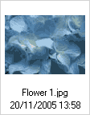

"Nustatym鑒" mygtukas, esantis 蠕ranki鑒 juostoje, atveria "Nustatym鑒 ", kur galite konfig贖ruoti CKFinder. ?tai pavyzdys:
Visi nustatymai yra automati禳kai i禳saugojami naudojant nar禳ykl?s "sausain?lius". Sausain?liai
Jei norite u鱉verti nustatym鑒 skydel蠕, tiesiog spustel?kite "U鱉daryti" mygtuk?, arba "Nustatymai"
Visi parametrai yra susij? su Fail鑒 skydeliu. Jie yra naudojami informacijos vaizdavimui skydelyje kontroliuoti. Fail鑒 valdymo skydelis
Nustato informacijos kiek蠕 fail鑒 skydelyje. ?tai pateiktas pavyzdys nuo minimalaus galim鑒 pasirinkim鑒 iki maksimalaus:
 |
 |
 |
 |
Nustato, kokia tvarka yra r贖禳iuojami failai. R贖禳iavimas gali b贖ti nustatomas pagal ab?c?l?, failo pavadinim?, dat? pagal fail鑒 naujum?, arba netgi pagal failo apimt蠕.